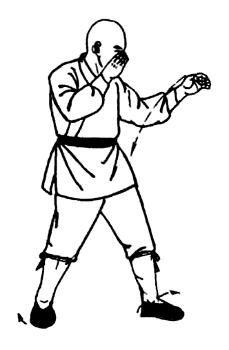
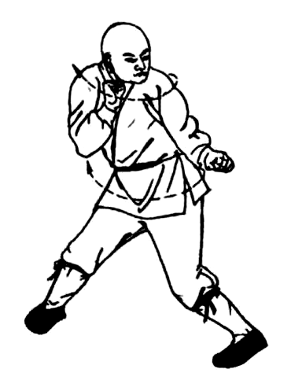
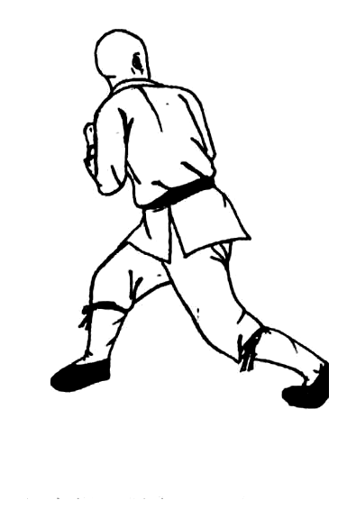

Fundamental body methods · 基本身法
Rear Turn
后转身 · 图 2-62–2-64
1 / 1
Figures 2-62–2-64
Follow each row left to right.
A linked turn to face behind; the middle posture repeats.
Step 1
Initiate behind
Action
Turn the head and shoulders, then let the hips and feet follow toward the rear.
Key point
Spot the new direction before transferring weight.
2-62

→
2-63

Step 2
Complete the turn
Action
Finish the rotation in a balanced guard facing the opposite direction.
Key point
Allow both feet to pivot so neither knee remains twisted.
2-63
→
2-64
